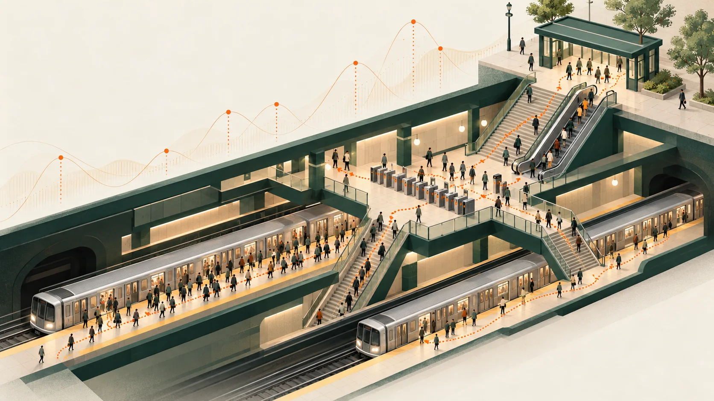
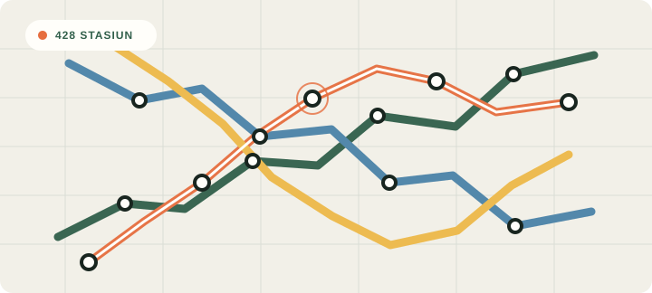
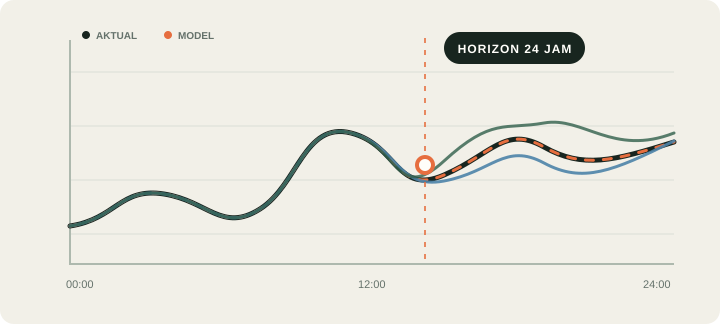
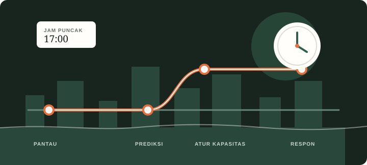

MAE · benchmark 24 jam
entries / stasiun-jamChronos-2 unggul tipis dari LightGBM rekursif; PatchTST tertinggal pada run ini.
Benchmark forecasting jumlah entries di stasiun subway New York. Lima pendekatan diuji pada jendela waktu dan kelompok stasiun yang sama.
Skor dihitung per observasi stasiun-jam, pada 66 origin harian yang tidak tumpang tindih. MAE dan RMSE lebih rendah berarti lebih baik.
Chronos-2 unggul tipis dari LightGBM rekursif; PatchTST tertinggal pada run ini.
Ringkasan visual tentang cakupan data, perbandingan model, pola jam sibuk, dan batas interpretasi hasil.
RINGKASAN PROYEK · 00:30 · TANPA SUARA
Jumlah entries seluruh stasiun dijumlahkan per jam untuk origin terakhir yang tersedia. Gunakan pilihan stasiun untuk melihat prediksi per lokasi.
Peta merangkum total entries pada periode benchmark. Arahkan kursor untuk melihat volume, atau klik titik untuk memilih stasiun dan menggeser peta ke lokasinya.
Rata-rata entries untuk setiap jam dihitung dari semua observasi stasiun-jam yang tersedia pada periode evaluasi one-step.
Interpretasi dibatasi pada data yang diuji. Entries adalah catatan masuk fare gate, bukan hitungan orang unik.
Output ini adalah ringkasan statis hasil eksperimen. Tidak ada model yang dijalankan di halaman publik.



Semua model memakai station set, target waktu, konteks, dan 24 jam horizon yang sama. Baseline weekly-naive memakai nilai pada jam yang sama minggu sebelumnya.

Halaman menyajikan hasil yang telah dihitung sebelumnya: metrik, profil jam, peta agregat, dan contoh forecast terakhir. Tidak ada klaim forecast real-time.